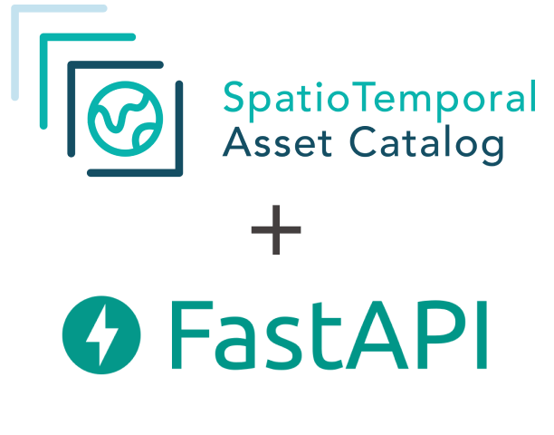

STAC Browser
Catalog explorer UI
Browse and search the cloud-native catalog of geospatial data.
Explore the Open Source services running on this instance
Browse and search the cloud-native catalog of geospatial data.
Search and visualize STAC catalogs on a map, with COG and geoparquet support.

Machine access to the Spatio Temporal Asset Catalog.
On-the-fly map tiles from STAC items and catalog searches.
Prometheus-backed observability dashboards for eoAPI services.
Guides for customizing, deploying, and operating eoAPI.
How to customize and extend eoAPI for your use case.
Docker Compose setup and runtime customizations.
Helm chart and cluster deployment.
AWS CDK constructs for deploying eoAPI.